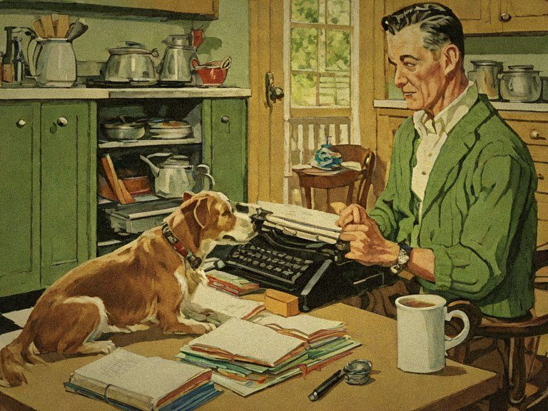

Pleased to meet you!About Fun Books

Old-fashioned handbooks for a new kind of trouble
Fun Books started with one question: what would the family handbooks of the 1950s say about today's problems? The answer turned into a bookshelf.
Our first title, The Independent Household, is a straight-faced guide to sixty skills that kept homes running before the power grid. The books that follow keep the same painted pictures and step-by-step pages, and point them at elephants, flying saucers, dinosaurs and sassy appliances.
Every book is a full-color printed paperback, one skill or one silly emergency per page.
Official and binding
The Fun Books Family Pledge
- Every page will be wholesome enough to read at the dinner table.
- Every crisis, however silly, gets a calm, step-by-step plan.
- Every picture is painted in the warm style of the old magazines.
- Every book is printed to order and made to be kept on the shelf.
- We will always remember to bring a casserole.
The Fun Books Family